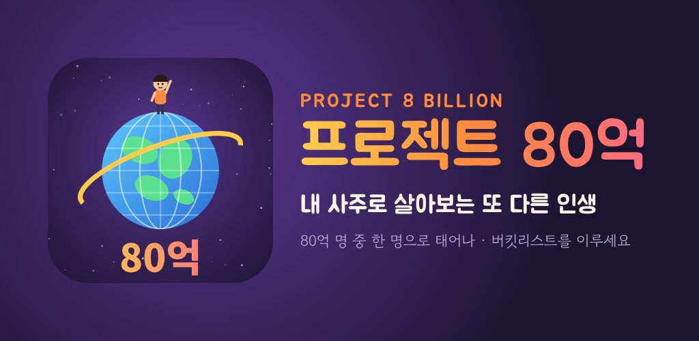
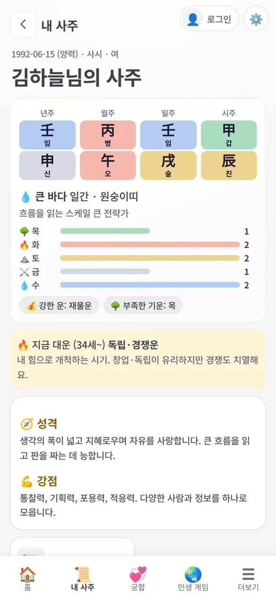
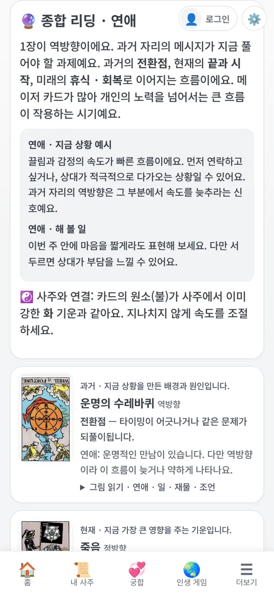
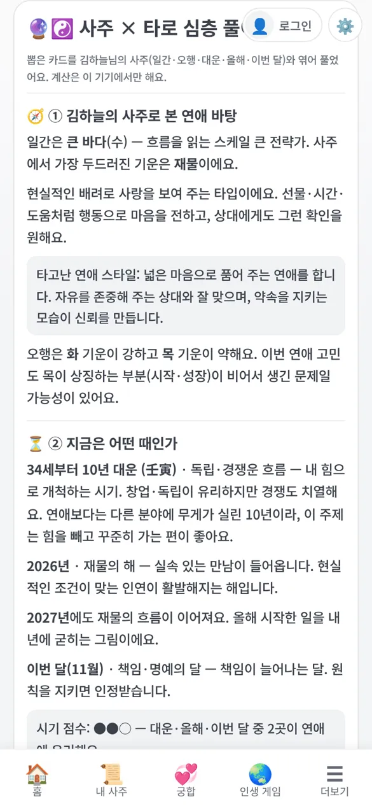
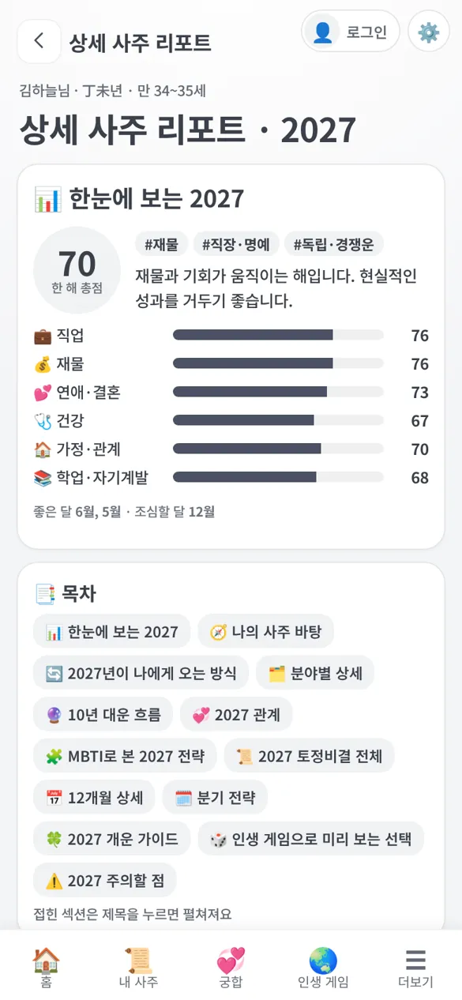
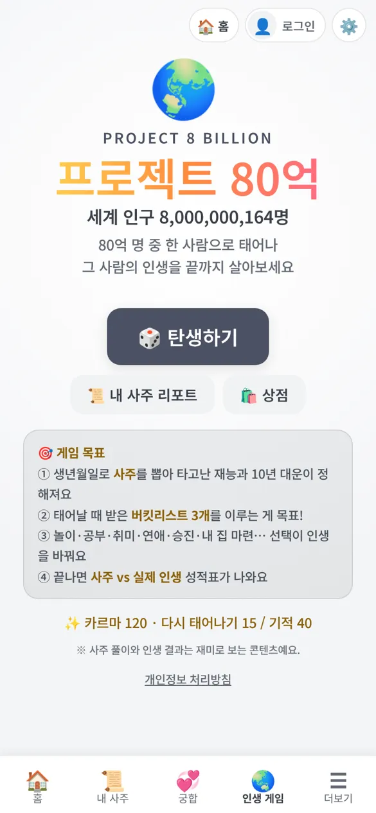

내 사주로 보는 오늘,
내 사주로 사는 또 다른 인생
오늘의 운세·사주·신년운세·토정비결·궁합·타로를 한곳에서. 그리고 세계 인구 80억 명 중 한 명으로 다시 태어나 내 운명과 노력으로 인생을 끝까지 살아 보는 게임 「프로젝트 80억」.
회원가입 없이 무료로 시작해요. 생년월일만 넣으면 모든 항목에서 다시 묻지 않아요.
운명 연구소에서 할 수 있는 것
계산은 만세력으로 정확하게, 풀이는 쉬운 말로. 결과가 왜 그렇게 나왔는지 근거까지 보여 줘요.
오늘의 운세
오늘의 일진과 내 사주를 겹쳐 총운 점수, 애정·금전·직장·건강, 시간대별 흐름과 행운의 색·숫자를 알려 줘요.
내 사주 풀이
사주 원국·오행 분포·10년 대운·성격과 강점. 년·월·일·시주가 나오는 계산 원리도 단계별로 확인해요.
2027 신년운세 · 토정비결
정미년 총운과 12개월 흐름, 좋은 달·조심할 달. 토정비결은 괘와 월별 신수, 달마다 맞춤 실천까지.
궁합 · 나의 관계도
연인·가족·친구·동료의 궁합 점수와 관계별 조언. 궁합을 본 사람들을 관계도로 모아 봐요.
타로 × 사주 심층 풀이NEW
직접 섞고 고른 카드를 내 일간·대운·올해·이번 달과 엮어 연애·일·재물·종합으로 상담해 줘요.
AI 사주상담
이직할까, 고백할까… 갈림길 앞에서 사주·MBTI·인생 게임 결과로 두 선택지를 비교해 줘요.
MBTI · 사주로 본 MBTI
24문항 성향 테스트와 사주로 추정한 MBTI를 나란히 비교해요.
상세 사주 리포트
2027 분야별 점수, 분기 전략, 12개월 실천, 관계·MBTI 시나리오를 한 권으로. 목차와 접기로 읽기 쉽게.
출석 · 미션 · 복주머니
매일 들르면 복주머니가 쌓이고, 원하는 시각에 오늘의 운세 알림을 받아요.

프로젝트 80억 : 또 다른 인생
세계 인구 비율대로 무작위로 태어나, 내 사주가 정한 재능과 10년 대운 속에서 인생을 끝까지 살아 봐요.
- 탄생어느 나라, 어떤 집안에서 태어날지는 운명. 생년월일로 사주가 정해져요.
- 버킷리스트 3개태어날 때 받은 꿈을 이루는 게 목표. 공부·일·연애·이민·투자·어학·피아노까지 실제로 배우며 살아요.
- 갈림길 극장중요한 선택 앞에서 두 길을 미리 살아 보고 결과를 비교해요.
- 엔딩 · 사주 vs 실제 인생타고난 운명과 내가 만든 인생을 비교한 성적표, 그리고 카르마 보상.
화면 미리 보기
밝은 파스텔 화면이 기본, 어두운 화면도 고를 수 있어요.





무료로 충분히, 더 깊이 보고 싶을 땐 카르마로
유료 콘텐츠는 카르마 하나로 열어요. 카르마는 광고와 게임으로 모으거나 구입할 수 있어요.
🆓 무료
- 오늘의 운세 · 내 사주 풀이 · 신년운세 월별 요약
- 궁합 점수 · 관계도 · MBTI 테스트 · 바람기 테스트
- 타로 리딩 + 타로 × 사주 심층 풀이 매일 1회
- AI 사주상담 첫 1회
- 인생 게임 「프로젝트 80억」 전체
✨ 카르마로 열기
- 📜 상세 사주 리포트 50 — 궁합 상세·2027 토정비결 전체 포함, 타로 심층 하루 3회로
- 🤖 AI 사주상담 20 / 회
- 🔮 타로 × 사주 심층 풀이 10 / 회 (무료 횟수 이후)
- 🎮 게임 아이템 — 운명 조작 팩 30 등
앱에서는 광고 제거 상품도 있어요. 카르마 사용 내역은 앱의 충전 화면 📒 카르마 내역에서 언제든 확인할 수 있어요.
내 정보는 내 기기에
운세 앱이라 이름과 생년월일이 꼭 필요하지만, 서버로 보내지 않아요.
이름·생년월일·궁합 상대·기록은 이 기기에만 남아요. 회원가입이 필요 없어요.
로그인하면 카르마 잔액·해제한 콘텐츠·게임 요약만 계정에 저장해 다른 기기에서도 이어 써요.
동의한 경우에만, 이름·생년월일 없이 사주 요약과 고민만 보내요.
자주 묻는 질문
앱은 언제 나오나요?
Google Play는 비공개 테스트, App Store는 TestFlight 단계예요. 그동안 웹(브라우저)에서 똑같이 이용할 수 있고, 앱이 나오면 이 페이지에 바로 안내할게요.
웹과 앱은 같은 서비스인가요?
네. 같은 콘텐츠를 웹과 앱에 함께 배포해요. 앱은 알림·햅틱·공유·인앱결제가 더해지고, 웹은 설치 없이 바로 써요. 기록은 각 기기에 따로 저장되며, 로그인하면 카르마와 해제한 콘텐츠를 옮길 수 있어요.
사주 풀이가 정확한가요?
사주는 만세력(양력·음력·윤달, 태어난 시간)으로 정확히 계산해요. 다만 풀이와 게임 속 인생은 재미와 자기 성찰을 위한 콘텐츠로, 중요한 결정의 근거로 삼지는 마세요.
태어난 시간을 모르면요?
시간을 "모름"으로 두면 년·월·일주로 풀이해요. 나중에 알게 되면 내 정보에서 바꿀 수 있어요.
구매한 카르마나 콘텐츠가 사라졌어요.
로그인했다면 같은 계정으로 다시 로그인하면 잔액과 해제한 콘텐츠가 돌아와요. 광고 제거는 상점 → 구매 복원으로 되돌릴 수 있어요. 그래도 안 되면 아래 이메일로 알려 주세요.
광고가 너무 많지 않나요?
광고는 원할 때 카르마를 받으려고 보는 보상형이 중심이에요. 인생 게임 중에는 10년마다 한 번 쉬어 가는 광고가 있고, 광고 제거 상품으로 끌 수 있어요.
내 기록을 지우려면?
더보기 → 내 정보·기록 지우기에서 한 번에 지울 수 있어요. 로그인했다면 상단 로그인 메뉴 → 회원 탈퇴로 서버에 저장된 기록도 지울 수 있어요.